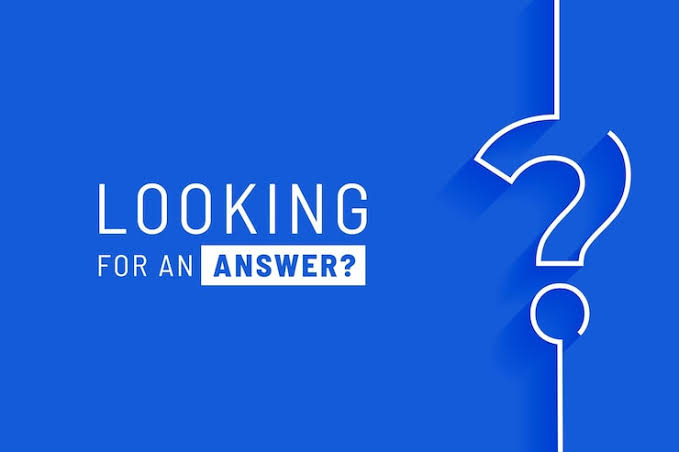

Frequently Asked Questions
If you can’t find what you’re looking for, visit the documentation or contact support.

General
What is KimTools.WinForms?
KimTools.WinForms is a modern UI toolkit for Windows Forms that helps developers build visually rich desktop applications using modern controls, advanced styling, integrated themes, SVG icons, and powerful design-time tools.
Unlike traditional UI libraries that only provide replacement controls, KimTools focuses on the entire developer experience, from rapid prototyping to production-ready applications.
Why should I choose KimTools over standard WinForms controls?
Standard WinForms controls are stable and familiar but were never designed for today’s application design standards.
KimTools extends the WinForms platform with modern rendering, consistent styling, advanced design-time editors, semantic colors, SVG graphics, responsive layouts, and production-ready components while preserving the productivity of Windows Forms.
Is KimTools a replacement for Windows Forms?
No.
KimTools builds on top of WinForms rather than replacing it. Your application continues using the native Windows Forms framework while benefiting from modern UI capabilities and enhanced developer tooling.
Who is KimTools intended for?
KimTools is designed for:
- Professional desktop application developers
- Enterprise development teams
- Independent software vendors (ISVs)
- Freelancers
- Consultants
- Students
- Anyone modernizing existing WinForms applications
Can I modernize an existing WinForms application without rewriting it?
Yes.
KimTools was specifically designed for incremental adoption. Existing controls can be replaced one screen at a time, allowing applications to evolve gradually without affecting business logic or application architecture.
Installation & Compatibility
Which versions of .NET are supported?
KimTools supports both .NET Framework and modern .NET.
Refer to the System Requirements page for the latest compatibility matrix.
Which IDEs are supported?
KimTools is primarily designed for Visual Studio and fully integrates with the WinForms Designer.
Development using JetBrains Rider is also supported.
How do I install KimTools?
KimTools is distributed through NuGet.
Install the package matching your target framework, restore packages, rebuild the project, and start developing.
The Getting Started guide contains a complete installation walkthrough.
Can I use KimTools together with standard WinForms controls?
Yes.
KimTools controls integrate seamlessly alongside the standard Windows Forms controls, making migration straightforward.
Can KimTools be used together with third-party control libraries?
Yes.
KimTools is designed to coexist with other WinForms component libraries, allowing gradual migration or mixed UI solutions where appropriate.
Controls & Components
How many controls are included?
KimTools includes more than 40 modern controls and components, covering common desktop application scenarios from navigation and input controls to advanced layout and data presentation.
Does KimTools include a layout system?
Yes.
KimTools includes modern layout containers that simplify building responsive desktop interfaces while remaining compatible with the WinForms layout engine.
Are controls fully customizable?
Yes.
Most controls expose extensive appearance and behavior properties, allowing applications to customize colors, borders, typography, spacing, icons, animations, shadows, and more.
Does KimTools include production-ready templates?
Yes.
Professional dashboards, UI kits, starter projects, and application templates are available from the official KimTools Store.
Themes & Styling
How does the theme engine work?
KimTools uses a centralized theme engine rather than styling controls individually.
Controls consume semantic theme values instead of hard-coded colors, allowing an application’s appearance to be updated consistently across the entire interface.
Can themes be changed at runtime?
Yes.
Applications can switch themes dynamically without recreating forms or manually updating every control.
What is the Tailwind-inspired color system?
KimTools includes a semantic color system inspired by Tailwind CSS.
Instead of relying on arbitrary RGB values, applications can use meaningful color tokens that improve consistency across large projects.
How many themes are included?
KimTools includes more than 35 professionally designed themes suitable for business, enterprise, and consumer applications.
Can I create my own themes?
Yes.
Every aspect of the visual appearance can be customized, allowing organizations to implement their own branding and design systems.
Designer Experience
Does KimTools support the WinForms Designer?
Yes.
KimTools was designed with Visual Studio’s WinForms Designer in mind and includes integrated design-time support across its controls.
What are Designer Editors?
Designer Editors provide visual configuration interfaces for common properties such as colors, themes, SVG graphics, gradients, and other advanced settings, reducing the need to edit complex property values manually.
Does KimTools support drag-and-drop development?
Yes.
Controls can be added, configured, and arranged directly from the Visual Studio Toolbox like standard WinForms controls.
Performance
Is KimTools suitable for enterprise applications?
Yes.
KimTools is designed for applications ranging from internal business tools to large-scale enterprise software where maintainability, performance, and consistency are essential.
Does KimTools support High DPI displays?
Yes.
Controls are designed for modern Windows environments with proper High DPI rendering and scaling.
How are SVG icons rendered?
KimTools includes over 10,000 SVG icons that scale cleanly across different display resolutions, providing crisp visuals without pixelation.
Will KimTools slow down my application?
No.
KimTools focuses on efficient rendering and optimized painting techniques while maintaining compatibility with the Windows Forms rendering pipeline.
Application performance ultimately depends on the overall design of the application and the number of controls displayed.
Licensing
Can I build commercial applications?
Yes.
Applications built using KimTools may be distributed commercially according to the terms of your license.
Do my customers need a KimTools license?
No.
Only developers using KimTools require a license.
End users do not need to purchase KimTools to run your applications.
How much does KimTools cost?
Pricing, promotions, and available editions may change over time.
For the latest information, visit:
What editions are available?
KimTools offers editions for different WinForms targets together with a PLUS edition that includes every supported target.
See the official pricing page for a complete comparison.
AI & Future
What does AI-Ready mean?
KimTools is evolving beyond a traditional control library into an AI-ready development ecosystem.
Future capabilities include AI-assisted workflows, an integrated MCP Server, intelligent UI generation, and tools designed for human-AI collaboration.
Is KimTools actively developed?
Yes.
KimTools is under active development with regular releases introducing new controls, themes, designer improvements, templates, and tooling enhancements.
Support
Where can I report bugs?
When reporting an issue, include:
- KimTools version
- .NET version
- Visual Studio version
- Operating system
- Steps to reproduce
- Screenshots or sample projects when available
Providing complete information helps diagnose issues more quickly.
Where can I find templates and UI kits?
Professional dashboards, templates, starter projects, and UI kits are available from the official KimTools Store.
Where can I watch demos and tutorials?
The official documentation and YouTube channel include walkthroughs, control demonstrations, complete application builds, and best practices for modern WinForms development.
How can I request a new feature?
Community feedback plays an important role in shaping future releases.
Suggestions for new controls, improvements, designer features, and tooling enhancements are always welcome.